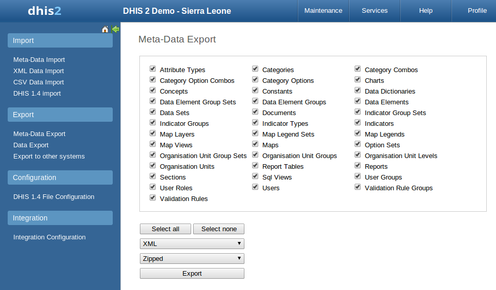
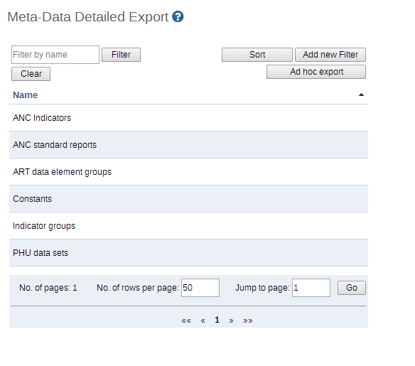
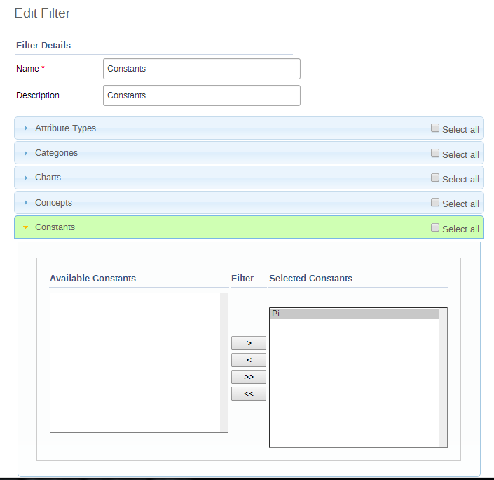
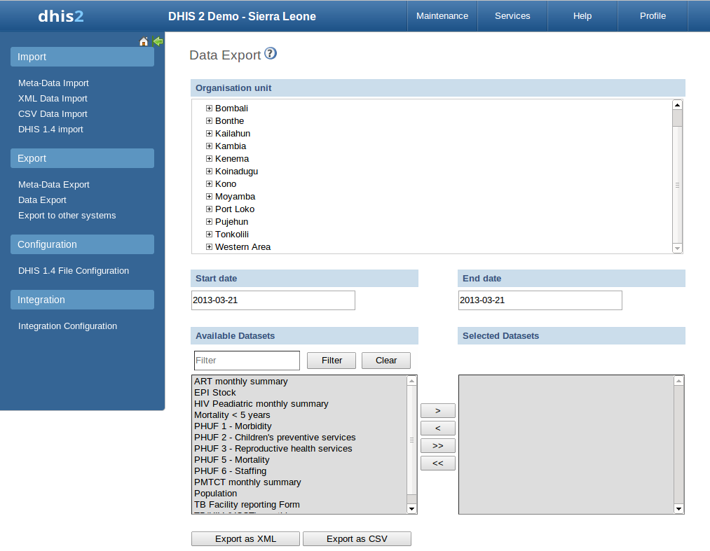
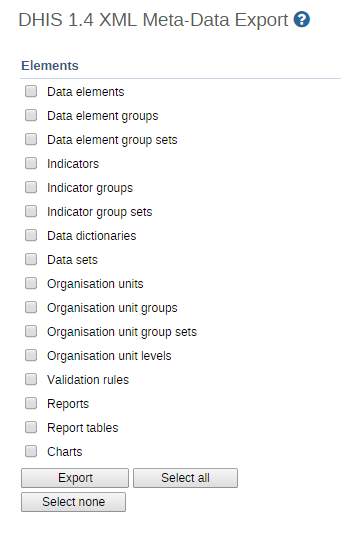
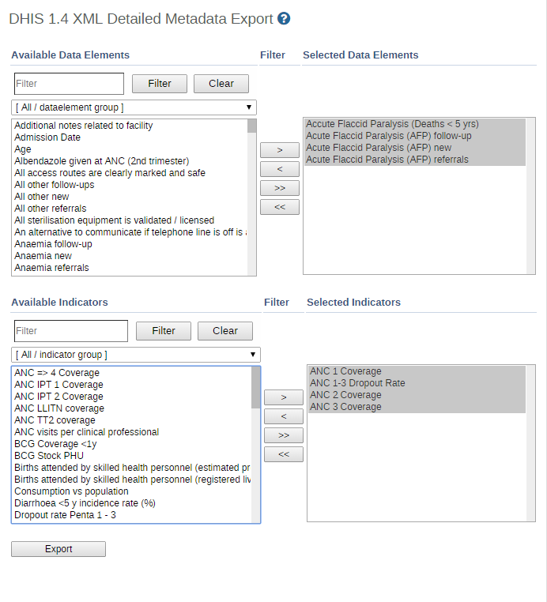
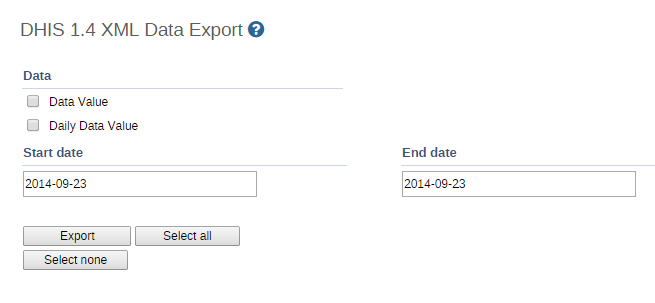

DHIS2 makes it possible to export various types of data in multiple data formats. You can export your data, also referred to as measures or facts; and your meta-data, which refers to the information describing your data. Data can be exported both in raw, non-aggregated format and in aggregated format. It is also possible to export a combination of data and meta-data in case you have special requirements. This chapter covers mainly how to export data and meta-data through the user interface of the import-export DHIS 2 module. Data can also be exported programmatically through the DHIS 2 Web API, and it is useful to be aware of the various options available:
-
Export raw, non-aggregated data through the user interface: Covered in this chapter.
-
Export aggregated data programmatically through the Web API: Please refer to the Web API chapter, section on Analytics.
-
Export a combination of data and meta-data: Please refer to the SQL view sections in the Data administration chapter and Web API chapter.
-
Export meta-data through the user interface: Covered in this chapter.
-
Export meta-data programmatically through the Web API: Please refer to the Web API chapter, section on meta data.
Data can be exported on various formats, including DXF 2 (the DHIS 2 meta-data and data exchange format based on XML), CSV, PDF, MS Excel and the DHIS 1.4 XML format.
Another aspect of data export is the type of DHIS 2 deployment. In the case of online deployment, all data is saved into a single database only. In an offline deployment, each instance will store data in a separate database in their local system. In an offline deployment, after the data entry is finished, data will have to be manually sent to the next level in the organizational hierarchy. In an on-line application this is not required, as all data is captured over an Internet connection and stored in a central location.
Meta-data is "data about data". In the context of DHIS 2, meta-data consists of definitions of data elements, indicators, the structure and names contained in the organizational hierarchy, and other options. Click on the "Meta-data export" link from the main "Data export" screen in order to access this. Just select the features, format, and the compression that you want and click "Export". This metadata file can then be transmitted just like a data file, except it will contain information on the definitions of the various features, as opposed to the values of the data themselves.
|  |
Simply choose the objects which you would like to export, and click .
In certain implementations, it may be useful to create groups of metadata objects which should always be exported together. To access this feature, click " Meta-data detailed export" from the left side menu of the "Import-export" dialog.
|  |
A list of available metadata export filters will be shown. Click on the name of the filter you would like to edit and then select "Edit" from the context menu. An example of the dialog is shown below.
|  |
In this example, we have created a metadata export filter, to export all "Constants" from the system. If any meta-data objects have been selected to be part of the filter, they will be highlighted in green. Click on the name of the objects you would like to export, and add them to the right side to be selected to be part of the export. Once you have composed the filter as needed, click "Save" (when editing) or "Add" (when adding a new metadata filter).
To export the filter, click on the name from the main "Meta-data detailed export" menu, and choose "Export" from the context menu. The following dialog will appear.
 |
You can choose to export the data as XML or JSON format. You can also specify whether or not the result should be zipped or unzipped. Lastly, if you click check "Export with dependencies", all dependent meta-data objects which the ones you have selected depend upon, will also be exported.
To export raw data from DHIS2, choose "Services->Import-export->Data export". Select the organisation unit(s), the start and end date, and dataset or data sets for which data export should be selected. Click "Export as XML" to export data as XML and "Export as CSV" to export data in CSV format.
|  |
A pop-up save option will appear on the displayed screen (see picture below) prompting the saving of the exported data. You may save the export folder on your desktop or any other folder by selecting the ‘Save to Disk’ option from the pop-up prompt.
Event (or tracker) data can be exported by accessing the "Event data export" function by choosing "Services->Import-export->Event data export" from the main menu. Choose the organisation unit of interest, along with the Programs and Program stages and start and end dates. The "Inclusion" option has three options.
-
Selected organisation unit: Export event data only for the selected organisation unit
-
Include children of organisation unit: Export event data for the children of the organisation unit as well as the selected organisation unit itself.
-
Include descendants of organisation unit: Export event data for the descendants of the organisation unit as well as the selected organisation unit itself.
Event data can be exported either as XML or JSON, and either compressed or uncompressed in a ZIP file. Once you have set all options, press . The export file will now by downloaded to your local computer.
The DHIS 1.4 Meta-data export functionality provides the same functionality as the standard DHIS2 meta-data export, except that the resulting file can be used to transmit meta-data information to DHIS 1.4 systems.
|  |
The DHIS 1.4 Metadata export functionality provides the same functionality as the detailed DHIS 2 metadata export, except that the resulting file can be used to transmit meta-data information to DHIS 1.4 systems. Simply select the data elements and indicators that you want and click "Export" to begin the export process.
|  |
This service allows you to export data to a format which can easily be imported into a compatible DHIS 1.4 database.
|  |